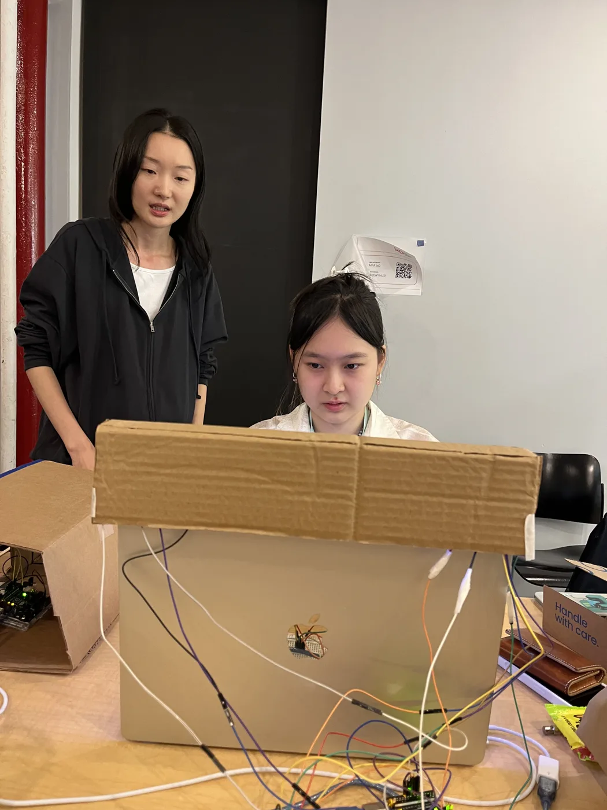
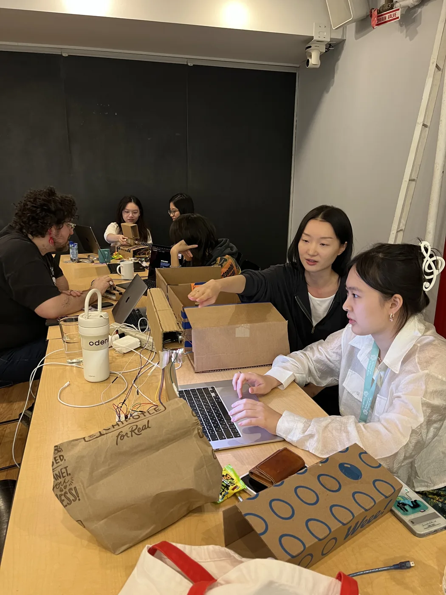
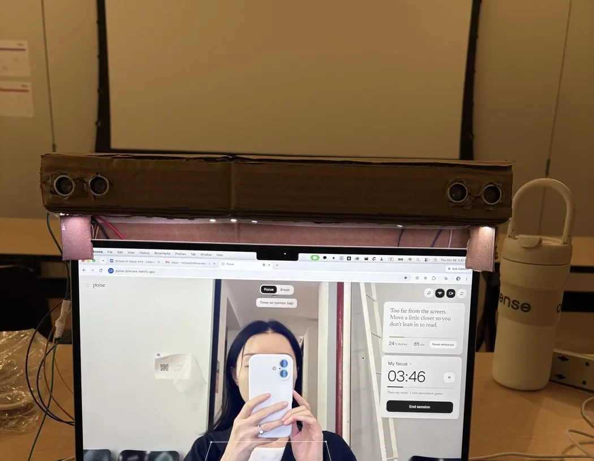
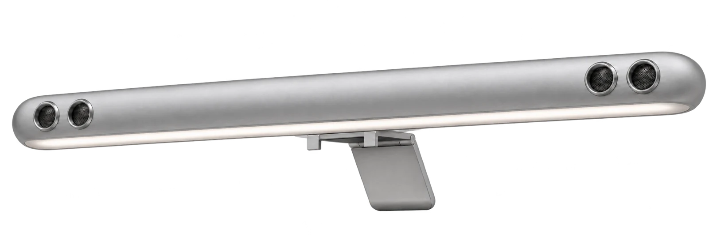

poise
Notice when your
posture drifts, without stopping
your work.
- My role
- Solo designer and builder
- Timeline
- One month, Oct to Nov 2026
- Built with
- Claude and Arduino
- Lens
- Lens A, Make it work
Neck and back pain
MRI
One scan$300–3,000
Physical therapy
2× a week, 12 weeks$1,200–8,400
Total$1,500–11,400
U.S. self-pay prices · Sword Health, CareRoute, 2025
Trying to fix posture
Ergonomic chair
Herman Miller Aeron$2,305–2,730
Reformer Pilates
2× a week, 12 weeks$840–1,440
Total$3,145–4,170
U.S. prices · BTOD, SmartHealthClubs, 2026
We driftwithout noticing.
Neck pain
Lower back pain
Herniated disc
User research. When it drifts, where it hurts, what they try.
When do you notice your posture changed?
15 responses · one answer
- Right away2 (13%)
- Sometimes4 (27%)
- Rarely3 (20%)
- Only when it starts to hurt6 (40%)
9 of 15 rarely notice, or only once it hurts
Where do you feel pain after a long session?
15 responses · all that apply
- Neck7 (47%)
- Lower back7 (47%)
- Shoulders5 (33%)
- Upper back2 (13%)
- None1 (7%)
14 of 15 feel it somewhere
Have you tried anything to fix your posture?
15 responses · all that apply
- Stretching9 (60%)
- Better chair or desk6 (40%)
- Reminders or timers2 (13%)
- Nothing2 (13%)
- Other3 (20%)
Most fix it later, nothing catches it early
A quiet nudge, not another alert.
Hypothesis
If people get a clear cue that helps them notice early with no interruptions,
they’ll catch the drift sooner and stay aligned longer.
Interviews with 3 people
They wanted it quiet.
One said alerts can feel distracting, but a quiet reminder would be fine.
No interruptionsMy own idea
What about a light bar?
Some people already use one, so what if it changed color to show posture?
Notice earlyBuilt in cardboard, tested with classmates.





1 of 6
Onboarding
I added a few questions about how you sit and work, so Poise fits you from the start.
2 of 6
Camera or sensor
The camera never records you, and the sensor mode works with no camera at all.
3 of 6
Quick guide
There are a lot of features, so I grouped similar ones into four quick steps.
4 of 6
Posture feedback
Along with the light, a figure follows your posture and shows you how to fix it.
5 of 6
Picture in picture
A small window keeps your posture in view while you work in other tabs.
6 of 6
Type to change settings
Settings were hard to find, so you can just type what you want and Poise changes it.
Where AI came in, and where I stayed in charge.
What AI did
From my flow to a real appI designed the flow and every state, and Claude turned it into a working web app and the Arduino code in a few days.My flow
Set upFocusDriftReportClaude is building itWhat AI got wrong
Too much on every screenThe text in modals was too long, setting names didn’t make sense, and with no design system, fonts, colors and spacing didn’t match.Camera off. Turn it on and I will start watching your posture. Your camera is processed on this device and never uploaded. Or use the distance sensor on the light bar, which is more exact about leaning toward the screen than the camera.
Turn on cameraUse sensorWhat I fixed myself
I set the rules firstI added icons, cut the text so it’s easy to read, renamed settings in plain words, and made a design system for AI to follow.Turn on your camera
It sees your posture, never records it. The sensor works too, just less precisely.
Use sensorTurn on camera
Next, a more personal app, and a real light bar.
The app
Good day.
You stayed aligned 78% of the time.
Better than last week.
You drift most on Thursday afternoons.
Up 12% this month.
Mornings are your best time to focus.
78%in good posture
22sto correct
5drifts
- A posture reportSee your day, week and month, and find when you drift the most.
The light bar

- A 3D printed light barA real body instead of cardboard, with a battery so there is no cable.